CellDesigner Walkthrough¶
The following is a walkthrough of how to produce Systems Biology Markup Language (SBML) files that are compatible with CRNT4SBML. The SBML file is a machine-readable format for representing biological models. Our preferred approach to constructing this file is by using CellDesigner. CellDesigner is a structured diagram editor for drawing gene-regulatory and biochemical networks. CellDesigner is a freely available software and can be downloaded by visiting celldesigner.org . Although creating this SBML file may be achievable by other means, use of CellDesigner is the only approach that has been verified to work well with the provided code. Extreme caution should be used if the user wishes to use an already established SBML file or another software that produces an SBML file. We will continue by demonstrating how to represent the C-graph of Figure 1C from [irene] (provided below) for both mass conserving and semi-diffusive networks in CellDesigner. For this demonstration we will be using version 4.4.2 of CellDesigner on a Mac.
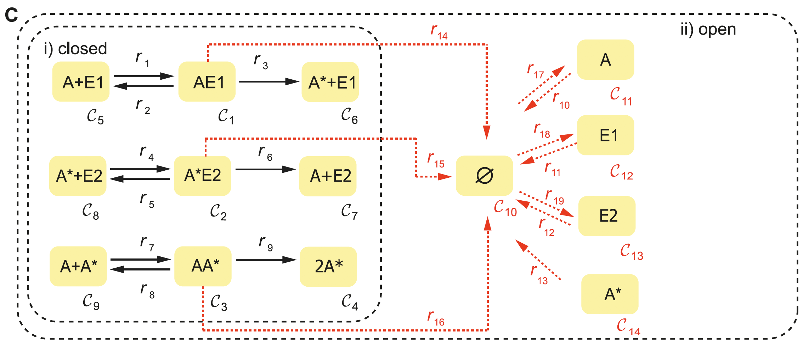Creating a Species¶
To begin, launch CellDesigner and create a new document. The following new document box will then appear. The name provided in this box can be set to anything the user desires and a specific name is not required. In addition to a name, this box also asks for the dimension of white space available in the workspace. The default width of 600 and height of 400 will be appropriate for most small networks.

Once the workspace has been created, the species of the network can be represented in CellDesigner by creating a generic protein, which can be found in the top toolbar (as pictured below) by hovering over the symbols.
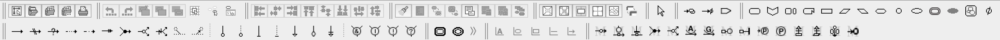After the generic protein symbol is selected click on the workspace to create a species. A box will then appear and ask
for the species name. Although no specific name is required, for visual purposes it is suggested to use a name that is
similar to the name used in the C-graph. Below we have created the species  and of the provided
C-graph using generic proteins.
and of the provided
C-graph using generic proteins.

Although regular species are sufficient enough to represent a C-graph, it may also be useful to specify if a particular
species is phosphorylated. This can be done by selecting the “Add/Edit Residue Modification” symbol in the top toolbar.
A box will then appear and the up and down arrows can be used to select “phosphorylated”. After pressing ok, a species
can be phosphorylated by hovering over the generic protein and selecting one of the dots on the outline of the protein.
One can tell if the species is phosphorylated by noticing if there is a circle with a “P” in the middle. Below we have
a species where the generic protein on the left is not phosphorylated and the generic protein on the right is
phosphorylated.
In addition to creating species we can also create chemical complexes as in the C-graph. To do this, in the top toolbox select the symbol “Complex” and click in the workspace, again a specific name is not required, but it is encouraged. One can then place species within this complex using the generic protein approach outlined above. Below is the CellDesigner representation of complex .

Creating a Reaction¶
In CellDesigner there are three types of reactions that are important when recreating a C-graph: State
Transition 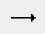, Heterodimer Association  , and Dissociation 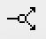. We will first
demonstrate Heterodimer Association and Dissociation reactions by creating reactions 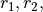 and
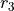 of the C-graph. We will then address State Transition reactions by creating 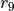. To create reactions
, and Dissociation 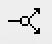. We will first
demonstrate Heterodimer Association and Dissociation reactions by creating reactions 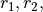 and
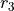 of the C-graph. We will then address State Transition reactions by creating 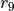. To create reactions
 and , first create species and , in addition to complex . Then
using the top toolbox select “Heterodimer Association” and first select the two species and
(order of selection does not matter) then select the complex . This concludes the creation of , and
the CellDesigner depiction should be similar to the picture provided below.
and , first create species and , in addition to complex . Then
using the top toolbox select “Heterodimer Association” and first select the two species and
(order of selection does not matter) then select the complex . This concludes the creation of , and
the CellDesigner depiction should be similar to the picture provided below.
To create we need to make the heterodimer reaction reversible. To make a reaction reversible right click the
reaction and select “Change Identity…”, then select True under the reversible category. This provides the CellDesigner
representation of and as provided below.
Now we create reaction using a dissociation reaction. To do this, select “Dissociation” and first select the
complex and then select the species and phosphorylated species (the order of selection
of the species does not matter). This provides the CellDesigner representation of below.

The last type of reaction we will consider is a State Transition, to do this we will produce reaction . After
creating complex , we create reaction by selecting “State Transition” and first click the complex
and then the phosphorylated species . Although we have created a reaction we have not created
exactly yet. We have not accounted for the fact that two molecules of the phosphorylated species
are produced. To specify this in CellDesigner right click the reaction and select “Edit Reaction….”, this opens the
following box.
In this box one can then specify the stoichiometry of the reactants and products of the reaction. Note that the species are defined in terms of the species id, rather than the name that the user provided. To obtain the species id one can hover over a species or complex in the workspace, or one can see a list of the species by viewing the bottom box in CellDesigner and selecting the “Species” tab, an example of this box can be seen below.
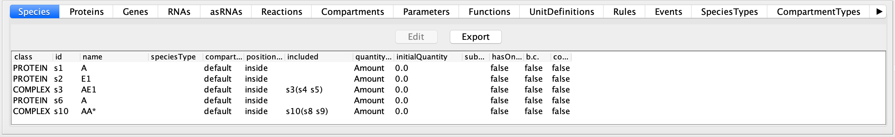In the reaction box produced by selecting “Edit Reaction….”, we can specify that two molecules of phosphorylated
species are produced by selecting the “listOfProducts” tab then clicking the species corresponding to the
phosphorylated species and then selecting Edit and changing stoichiometry to 2.0. We can confirm this change
by choosing Update. A similar process can be completed if you want to change the number of molecules of any species in
the reactants, but in this case one would instead choose the “listOfReactants” tab.
Representing Catalysis¶
Another useful feature that has been implemented in crnt4sbml is the ability to represent catalysis. In CellDesigner
catalysis is fairly straightforward to implement and can often lead to simpler looking diagrams. If we consider the
C-graph provided, one can see that the reactions and depict catalysis, where is
the catalyst. To represent this in CellDesigner, we first create the species 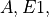 and phosphorylated species
. Once these species are created, we then construct a State Transition from species to the
phosphorylated species . Note that the State Transition cannot be reversible. We can now specify catalysis,
which is represented in CellDesigner as the symbol 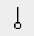, by selecting the symbol for catalysis, selecting
species and then clicking on the square box of the State Transition. If these steps are followed, the
following CellDesigner layout should be produced:
When parsing this type of SBML file, crnt4sbml will construct the underlying C-graph appropriately. For example, if we
say the species is given by species id ‘s1’, phosphorylated species by species id ‘s2’, and species
by species id ‘s3’, then crnt4sbml will construct the following reactions s1+s3 -> s3s1, s3s1 -> s1+s3, and
s3s1 -> s2+s3. These reactions will then have the reaction labels ‘re1f’, ‘re1d’, and ‘re1c’, respectively, specifying
complex formation, complex dissociation, and catalysis, respectively, when referenced in crnt4sbml.
In addition to this type of catalysis, we also allow for catalysis involving a complex dissociation reaction. However, we do not allow for catalysis involving a complex formation reaction. Below we depict these two scenarios.

{kind=link}
{kind=link}
{kind=link}
{kind=link}
{kind=link}
{kind=link}
{kind=link}
{kind=link}
{kind=link}
{kind=link}
{kind=link}
Basic Mass Conservation SBML File¶
Using the tools we have outlined so far, we can represent the mass conservation portion of the provided C-graph using CellDesigner. One particular layout of this CellDesigner representation can be seen below. In this diagram we have manipulated the shape of the reactions by right clicking them and choosing “Add Anchor Point”. Note that when saving the CellDesigner diagram, it will be saved as an xml file, this is an xml file with the layout of an SBML file. At this point no conversion to SBML is necessary and the xml file produced can be imported into the code.
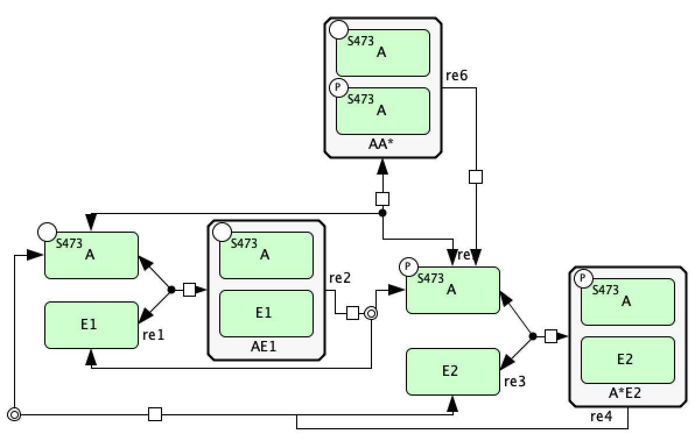{kind=link}
Catalysis Mass Conservation SBML File¶
Although the CellDesigner layout produced above is perfectly fine, it may become congested especially if more reactions and species are added. In this case, it may be beneficial to represent particular groups of reactions as catalysis instead. Using the guidelines established in the sections above, we can construct the mass conservation portion of the C-graph as follows in CellDesigner.
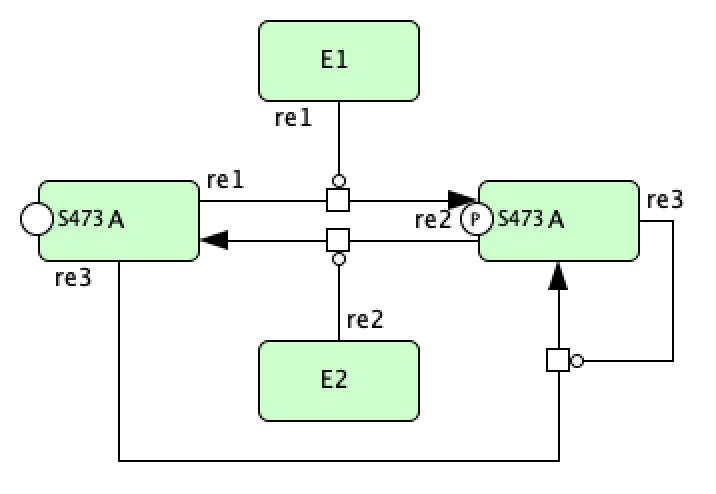{kind=link}
Adding Inflow and Outflow¶
In a semi-diffusive network we consider the degradation and formation of a species and we have to consider how to implement a source and a sink in the SBML file. Here a source is a node providing an inflow of a species and a sink is an outflow of a species. To do this, we will pick one species to be a boundary species in CellDesigner, for graphical purposes we will use the degradation symbol in CellDesigner (i.e. 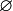). This symbol will serve as a sink, source, or both a sink and a source. This usage will prevent unnecessary clutter and make it simpler to create SBML files for semi-diffusive networks. One very important thing to note here is that the user must specify that this species is a boundary species! If the user does not do this then the sink/source will be considered as a normal species, this will create incorrect results and will not allow the semi-diffusive approach to be constructed. To create a boundary species right click the “Degraded” symbol in the top toolbox and then click in the workspace. At this point the item produced is just a species, although its appearance differs from a species or a complex. To make this species a source/sink right click the created item and choose “Edit species”, the box provided below should appear.

In this box set boundaryCondition to true and choose “Update” to confirm the change. One last word of caution: according to the semi-diffusive approach if there is formation of a species there must also be degradation of that species. However, one can allow for just degradation of a species.
{kind=link}